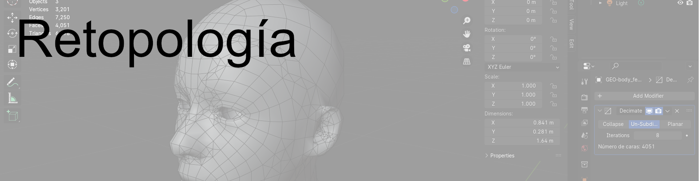
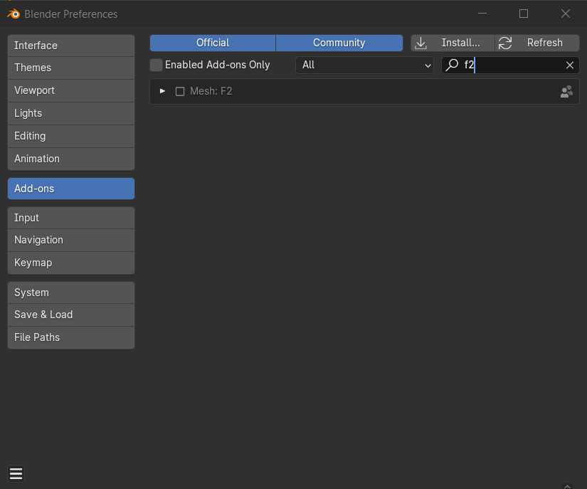
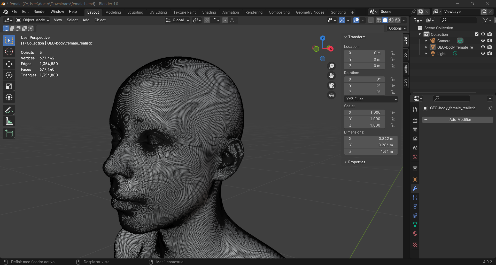
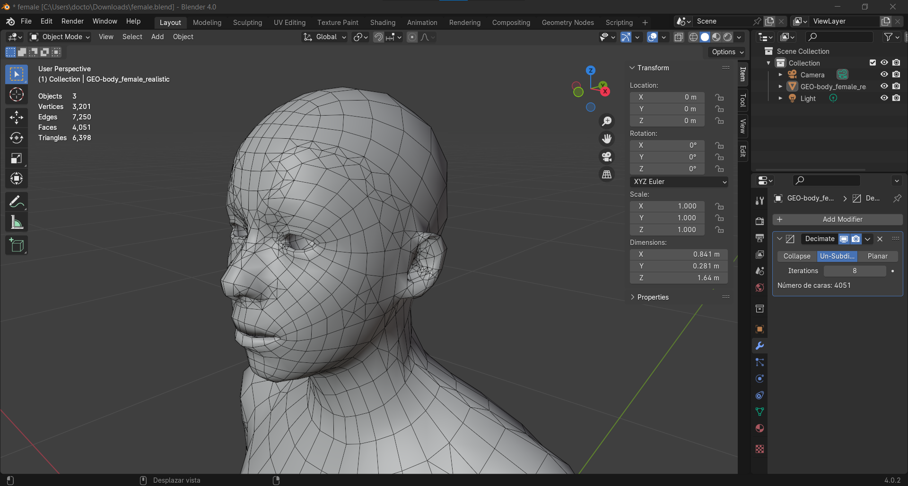

Figura femenina
En esta sesión vamos a trabajar la retopologia de un cuerpo femenino, el archivo base esta en los sesion 09 de teams, el primer paso es activar el addon F2 en blender.

Activamos también las estadisticas para tener la información de las caras geométricas.

Aplicamos el modificador decimate con un valor de 8.

Y obtendremos un modelo con esta calidad poligonal.
Ahora te toca a ti hacerlo de forma manual tienes dos semanas para el proceso